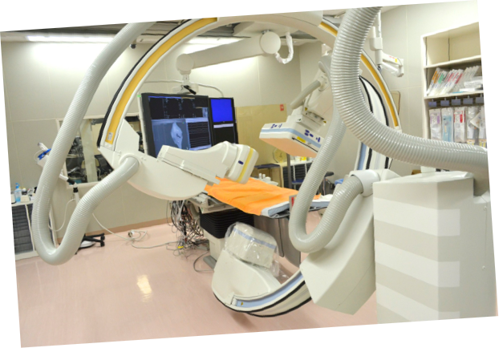
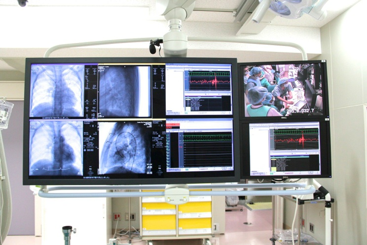
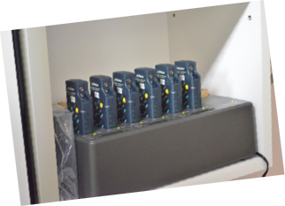
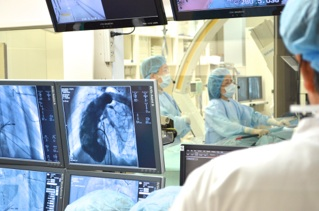

2012/4月，不整脈アブレーション治療のために設計された
カテーテル検査室「カテ室五番」が完成しました．

操作室に取り付けられたモニターです．４本の支柱にとりつけたアームでモニターの位置や角度は自由にかえられます．
操作室のモニターは，16種類の入力を16個のモニターに自由に出力できる，16 x 16 マトリックススイッチャーを導入して制御しています．

こちらはカテーテル検査室内の大型モニターです．56インチラージモニター + 24インチモニターを右に2枚つけてもらいました．
操作室にカメラを付けて，術者にみえるようになっています．
スティミュレータを操作しているのがみえて，チームの意思疎通にとても効果的，かつ快適です．デジタルインカムも6台設置して，
小さな声で6人が同時に会話可能，コミュニケーションも万全です．






カテ室内のモニターのサイズは56インチ，表示するコンテンツのレイアウトや大きさは自由に変更可能です．
右には24インチのモニターを追加で2枚つけてもらいました．
この画面は，CARTO 3D map用の画面構成．3D画面と電位の画面が目の前に広がって，とても快適です．

表示するレイアウトは手元の操作パネルでワンタッチで変更できます．

操作室のモニターは柱からの支柱で固定されており，配置やモニターの向きを自由に変更できます．
電気刺激装置，laboの操作，CARTO3の操作，ジェネレータの操作まで，一人で行うことも可能です．
術者と機器の操作者との意思疎通をスムーズに行うため，デジタルインカムが装備されました．

右に三つ並んでいるのは，「見学者用」のモニターです．
医療従事者の見学希望者がおられましたら，御連絡下さい．
中村先生の声もとてもよく聞こえます．声を張り上げることがなくなり，長時間のsessionでも，のどが楽になりました．